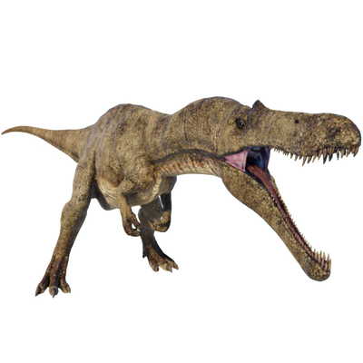

Useful Website
The large carnivorous spinosaurid Suchomimus is known for its unusual appearance – although its body is similar to that of Baryonyx or Spinosaurus, its long snout bears a closer resemblance to a modern-day crocodile; in fact, the name Suchomimus translates to ‘crocodile mimic’. Suchomimus can weigh up to two and a half tonnes and grow up to 9.5m in length, with large claws on its hand for catching and killing fish and small animals.
